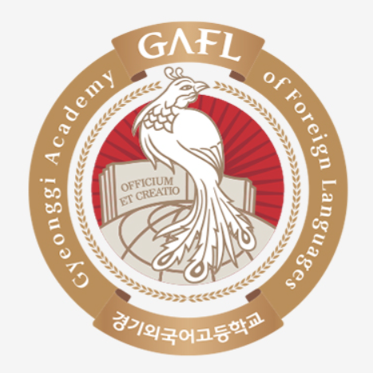
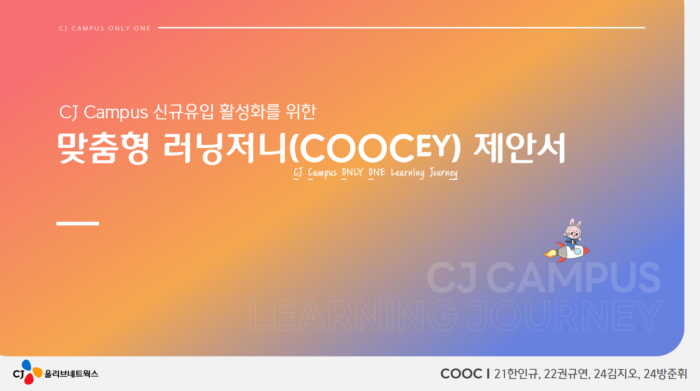

경기외국어고등학교 (2019.03 ~ 2022.02)
영어과 16회 졸업
한양대학교 교육공학과 24학번
안녕하세요! 제 이름은 방준휘입니다. 사회 문제에 대한 관심을 바탕으로, 창의적인 아이디어를 데이터와 기술로 풀어내는 것에 큰 보람을 느낍니다.
영어과 16회 졸업

사범대학 교육공학과 재학
융합전공대학 빅데이터융합학부 재학
주요 이수 과목: 데이터기반인적자원개발, 자료구조와알고리즘 등
CJ올리브네트웍스와 협업하여 'CJ Campus'의 신규 유입 부족 문제를 해결하기 위해, 온·오프라인 교육을 결합한 러닝 저니 설계를 제안함.
HUNET과 협업하여 이러닝 관련 프로젝트 진행할 예정.
아래 이메일로 연락 주시거나, 소셜 미디어를 통해 소통해요!